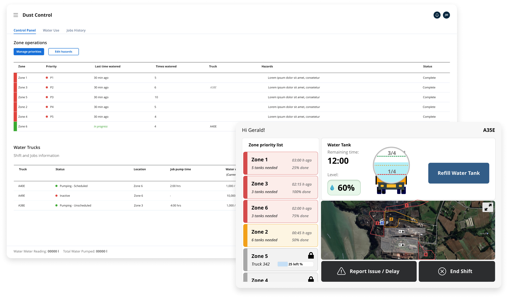
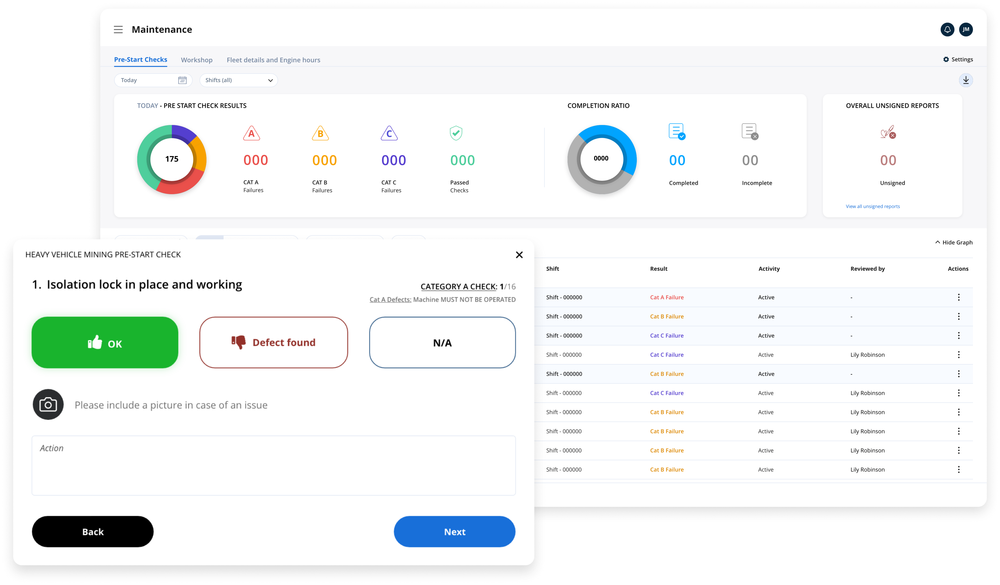

Tamara Abeldaño - UI/UX Designer li: tamaraabeldanio
👋 Hi there! I'm Tamara Abeldaño. I am a UI/UX Designer with a passion for turning complex data into beautiful, insightful experiences.
My services include:
My true forte lies in information visualization. I believe that data should be accessible to all, and I bring this to fruition by transforming data into visually appealing and meaningful information that meets human and business needs alike.
For the past two years, I've been part of really exciting projects that have taken the daily activities of my clients to the next level while promoting sustainable practices.
Dust Control: IoT application for water trucks at an industrial site used to control dust levels. The app successfully reduced the company’s water consumption by 80% and earned the company an award for innovation and environmental commitment.
Fleet Maintenance: App to monitor the status of assets within a fleet. The mobile component collects operators' responses through a structured questionnaire. Meanwhile, the web interface enables mechanics and supervisors to view asset statuses in real-time, prioritize issues by severity, filter unchecked assets, and edit or upload questionnaires based on asset categories. This app is meant to effectively reduce asset downtime and ensure assets are consistently up-to-date.
Food World Impact: Given that my previous work is confidential, I've found a creative outlet in my free time – developing an app that doubles as a skill sharpener and a stage for my skills. This project is a delightful blend of my passions for sustainability 🌎 and design 👩🎨.
Click below to get a sneak peek into 'Food Print' ⬇️.
My journey into UX was almost accidental. While training to become a front-end developer, I stumbled upon UX and thought, "This is it! I get to tell people what to do... 😜."
Jokes aside, I've always had a passion for design but never fully immersed myself until UX captured my interest.
Currently, I am expanding my skills in gamification, artificial intelligence, and Agile methodologies for designers—tools I'm excited to integrate into my design practice.
My background in translation has honed my communication skills, allowing me to infuse every design with clarity and connection.
Want the full scoop? Check out my Resume below!
Well, if you are still here you might be wondering how we can make data dance and design delight.
Feel free to reach out via email or connect with me on LinkedIn 🚀.